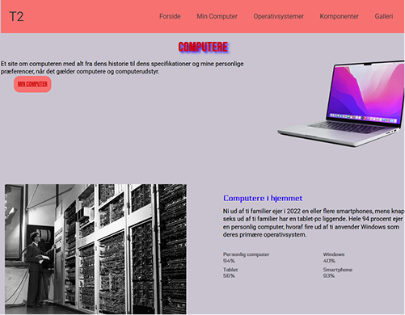
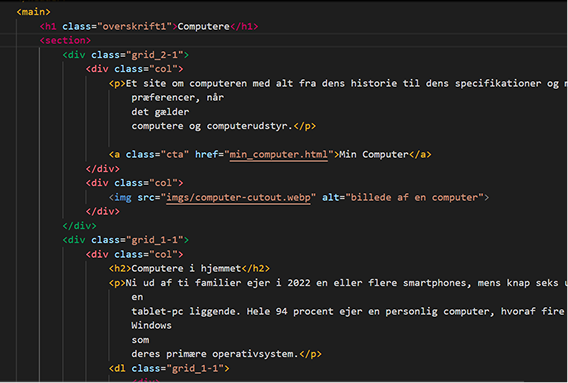
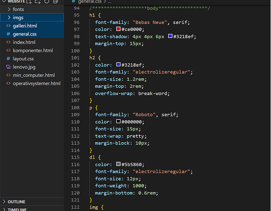

Grundlæggende Web
Tema - O2
Første introduktion til HTML og CSS
I dette tema lærte vi at opbygge en hjemmeside fra bunden med HTML og CSS. Vi arbejdede med struktur, farver, typografi og sektioner som header, main og footer. Mit projekt var et informationssite om computere, hvor jeg eksperimenterede med farvevalg og udtryk.
Hvad jeg lærte
Vi lærte også om mappestruktur og programmer som Visual Studio Code og FileZilla. I starten var det overvældende, men gav hurtigt mening.
Mine udfordringer
En udfordring var at få mit galleri til at fungere med grid. Det tog tid at forstå rækker og kolonner, men jeg lærte meget om layout og CSS-design undervejs.


Se site

